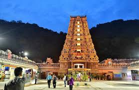
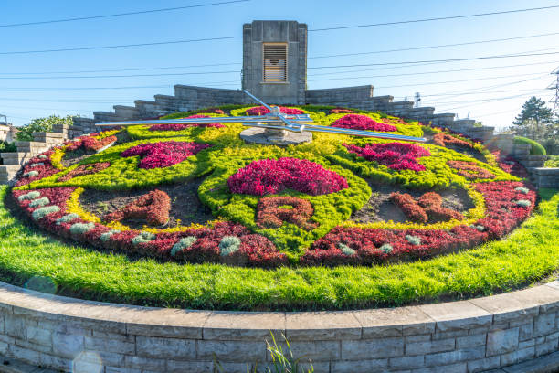

My Hometown: Vijayawada
Vijayawada, located on the banks of the Krishna River, is a major city in the Indian state of Andhra Pradesh. It is one of the fastest-growing urban centers in the state and serves as an important hub for commerce, politics, and culture. Known for its rich history and thriving economy, Vijayawada is also famous for its educational institutions and business opportunities.
Historical Monuments
- Prakasam Barrage
- Undavalli Caves
- Kondapalli Fort
Cultural Attractions
| Attraction | Description | Image |
|---|---|---|
| Kanaka Durga Temple | A famous Hindu temple located on Indrakeeladri Hill overlooking the city. |  |
| VMC Flower Clock | One of the largest floral clocks in India, located in Vijayawada. |  |
| Gandhi Hill | A memorial dedicated to Mahatma Gandhi, offering panoramic views of the city. |  |
Vibrant Markets
- MG Road (Bandar Road)
- Besant Road
Delicious Cuisine
- Pulihora: A popular tangy and spicy rice dish.
- Gongura Pickle: A traditional Andhra pickle made from sorrel leaves.
- Hyderabadi Biryani: A fragrant and flavorful rice dish.